Week 9: Confidence intervals
STA238: Probability, Statistics, and Data Analysis II
Michael Jongho Moon
March 5, 2026
Example: The speed of light
In km/s minus 299 000.
See Section 1.6 and 17.1 of Dekking et al. for details.
They are available as morley data set in R.
Example: The speed of light
Assume that the measurements are realizations of a normal random sample, \(X_1,X_2,...,X_n\sim{N}(\mu,\sigma^2)\) where \(\mu\) and \(\sigma^2\) are unknown. We are interested in constructing 95% confidence intervals for \(\mu\).
Suppose Michelson’s device was known to have a variance of \(90^2\) (km/s)\(^2\).
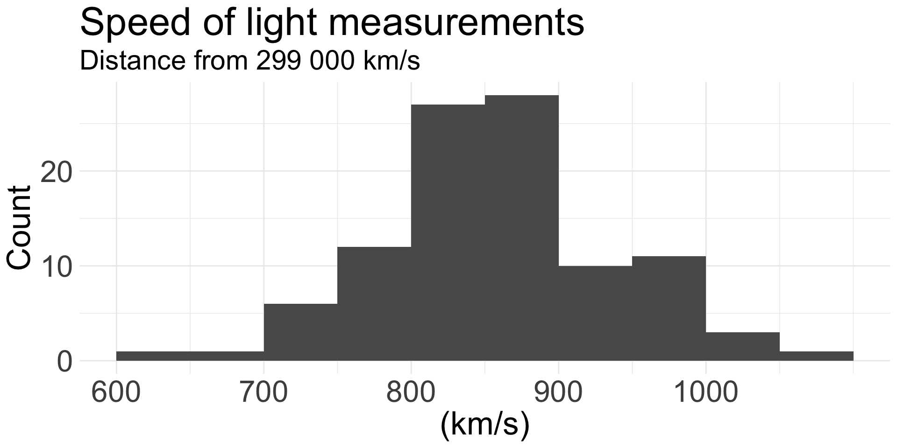
Example: The speed of light
Finding 95% confidence intervals for \(\mu\), \(X_1,\ldots,X_n\overset{\text{iid}}\sim N(\mu, \sigma^2)\).
Suppose Michelson’s device was known to have a variance of \(90^2\) (km/s)\(^2\).
The sampling distribution of \(\overline{X}_n\) is
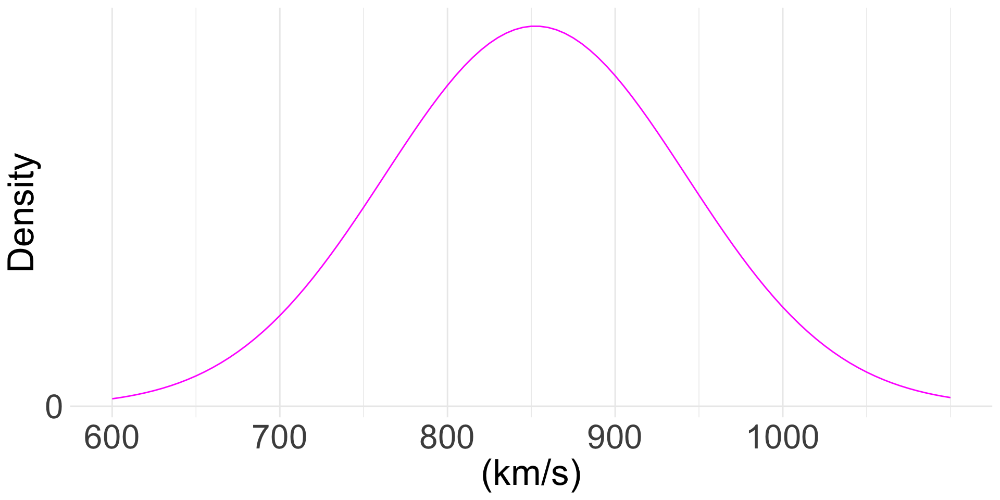
Example: The speed of light
Finding 95% confidence intervals for \(\mu\), \(X_1,\ldots,X_n\overset{\text{iid}}\sim N(\mu, \sigma^2)\).
Suppose Michelson’s device was known to have a variance of \(90^2\) (km/s)\(^2\).
\[P\left(\text{_______} < \sqrt{n}\frac{\overline{X}_n-\mu}{\sigma} < \text{_______} \right) = 0.95\]
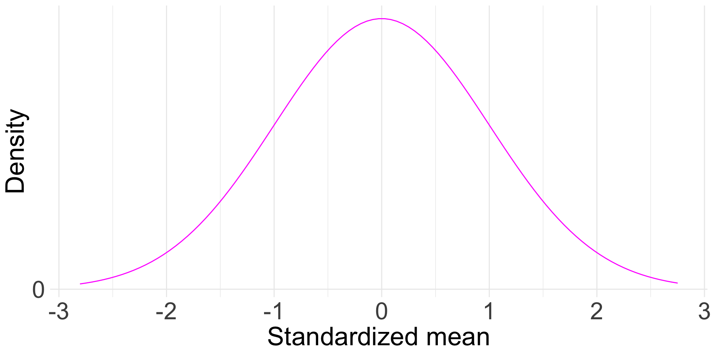
Example: The speed of light
Finding 95% confidence intervals for \(\mu\), \(X_1,\ldots,X_n\overset{\text{iid}}\sim N(\mu, \sigma^2)\).
Suppose Michelson’s device was known to have a variance of \(90^2\) (km/s)\(^2\).
\[P\left(z_{0.975} < \sqrt{n}\frac{\overline{X}_n-\mu}{\sigma} < z_{0.025} \right) = 0.95\]
- Find the critical values, \(z_{\alpha/2}\) and \(z_{1-\alpha/2}\).
- Arrange the inequality statement in terms of \(\mu\).
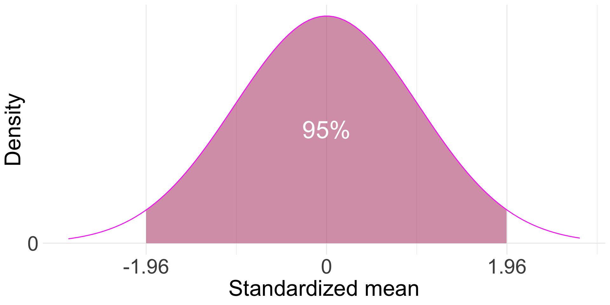
Example: The speed of light
Finding 95% confidence intervals for \(\mu\), \(X_1,\ldots,X_n\overset{\text{iid}}\sim N(\mu, \sigma^2)\).
Suppose Michelson’s device was known to have a variance of \(90^2\) (km/s)\(^2\).
\[P\left(z_{0.975} < \sqrt{n}\frac{\overline{X}_n-\mu}{\sigma} < z_{0.025} \right) = 0.95\]
\[\implies\]
\[P\left(-z_{0.975}\frac{\sigma}{\sqrt{n}} + \overline{X}_n > \mu > -z_{0.025}\frac{\sigma}{\sqrt{n}} + \overline{X}_n \right) = 0.95\] \[\implies\]
\[P\left(z_{0.025}\frac{\sigma}{\sqrt{n}} + \overline{X}_n > \mu > -z_{0.025}\frac{\sigma}{\sqrt{n}} + \overline{X}_n \right) = 0.95\]
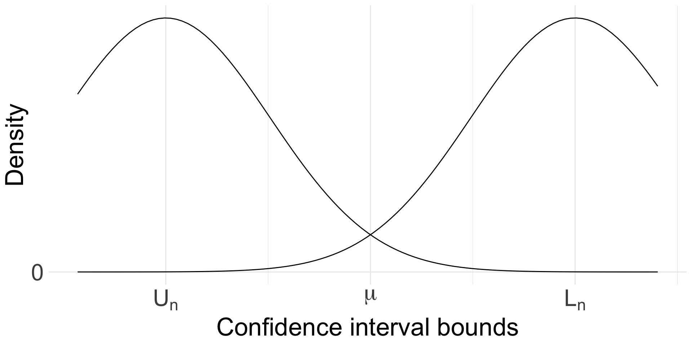
Normal data with a known variance
- The formula is for computing confidence intervals when with a given set of observed values, \(x_1,\ldots,x_n\).
- The lower and upper bounds are realizations of random variables.
Given a data set of size \(n\) realized from a normal distribution with a known variance \(\sigma^2\),
\[\left(\overline{x}_n-z_{\alpha/2}\frac{\sigma}{\sqrt{n}}, \overline{x}_n+z_{\alpha/2}\frac{\sigma}{\sqrt{n}}\right)\]
is a \(100(1-\alpha)\)% confidence interval for the mean.
Confidence intervals for a population mean
Given a data set \(x_1,...,x_n\) modelled as a realization of a random sample \(X_1,...,X_n\), we will study methods for constructing confidence intervals for the population mean.
Using Chebyshev’s inequality.Normal data with a known variance.- Normal data with an unknown variance.
- A large sample from an unknown distribution.
- A small sample from an unknown distribution.
Example: The speed of light
Assume that the measurements are realizations of a normal random sample, \(X_1,X_2,...,X_n\sim{N}(\mu,\sigma^2)\) where \(\mu\) and \(\sigma^2\) are unknown. We are interested in constructing 95% confidence intervals for \(\mu\).
Suppose the variance, \(\sigma^2\), was unkown..

Example: The speed of light
Finding 95% confidence intervals for \(\mu\), \(X_1,\ldots,X_n\overset{\text{iid}}\sim N(\mu, \sigma^2)\).
Suppose the variance, \(\sigma^2\), was unknown..
\[P\left(\text{_______} < \sqrt{n}\frac{\overline{X}_n-\mu}{\sigma} < \text{_______} \right) = 0.95\]
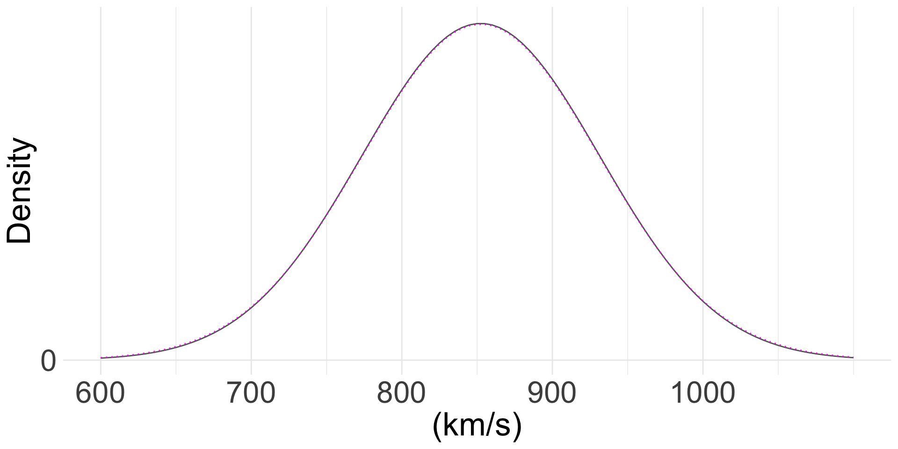
Distributions related to the normal distribution
The \(\chi^2(n)\) distribution
The \(\chi^2\) distribution with \(n\) degrees of freedom is the distribution of the random variable
\[X=\sum_{i=1}^n Z_i^2\]
where \(Z_1,\ldots,Z_n\) are independent standard normal random variables.
- Read as “chi-squared distribution with \(n\) degrees of freedom”.
- \(\mathbb{E}(X)=n\) for \(X\sim \chi^2(n)\).
- It’s a non-negative distribution.
The \(\chi^2(n)\) distribution
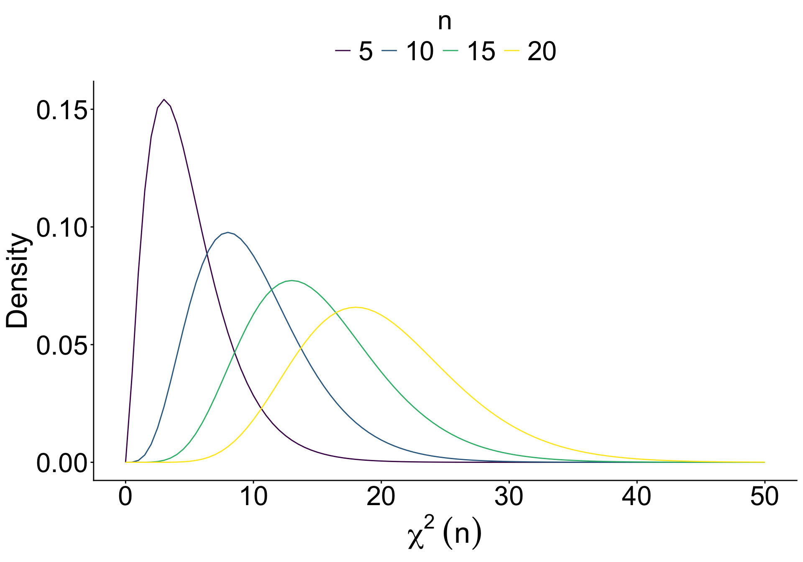
- Read as “chi-squared distribution with \(n\) degrees of freedom”.
- \(\mathbb{E}(X)=n\) for \(X\sim \chi^2(n)\).
- It’s a non-negative distribution.
Related R functions: dchisq(), pchisq(), qchisq(), rchisq()
The \(t(n)\) distribution
The \(t\) distribution with \(n\) degrees of freedom is the distribution of the random variable
\[Y=\frac{Z}{\sqrt{\left.X_n\right/ n}}\]
where \(Z\sim N(0,1)\) and \(X_n\sim \chi^2(n)\) are independent.
- Also called Student’s \(t\) distribution.
- It’s symmetric around 0.
- As \(n\to\infty\), \(t(n)\) converges in distribution to \(N(0,1)\).
The \(t(n)\) distribution
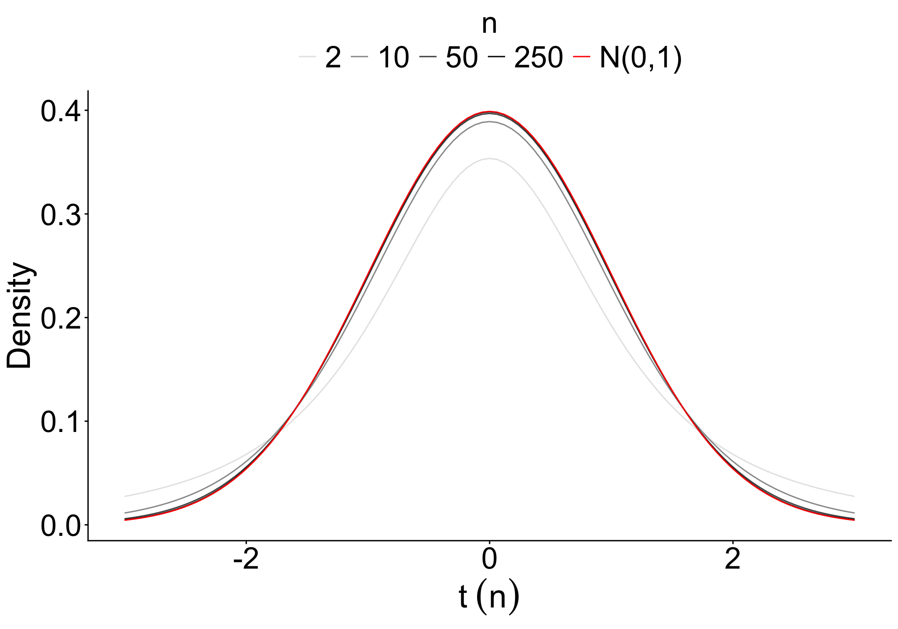
- Also called Student’s \(t\) distribution.
- It’s symmetric around 0.
- As \(n\to\infty\), \(t(n)\) converges in distribution to \(N(0,1)\).
Related R functions: dt(), pt(), qt(), rt()
Example: The speed of light
Finding 95% confidence intervals for \(\mu\), \(X_1,\ldots,X_n\overset{\text{iid}}\sim N(\mu, \sigma^2)\).
Suppose the variance, \(\sigma^2\), was unknown..
\[P\left(\text{_______} < \sqrt{n}\frac{\overline{X}_n-\mu}{S_n} < \text{_______} \right) = 0.95\]
\[\sqrt{n}\frac{\overline{X}_n-\mu}{S_n}=\frac{\overline{X}_n-\mu}{\sqrt{\left.S^2_n\right/n}}\sim t(n-1)\]
Example: The speed of light
Finding 95% confidence intervals for \(\mu\), \(X_1,\ldots,X_n\overset{\text{iid}}\sim N(\mu, \sigma^2)\).
Suppose the variance, \(\sigma^2\), was unknown..
\[P\left(t_{n-1,1-\alpha/2} < \sqrt{n}\frac{\overline{X}_n-\mu}{S_n} < t_{n-1,\alpha/2} \right) = 0.95\]
- \(t_{n, p}\) is the critical value of the \(t\) distribution with \(n\) degrees of freedom at \(p\).
\[P(T>t_{n,p})=p,\quad T\sim t(n)\]
Normal data with an unknown variance
- The interval depends on neither the mean nor the variance of the data generating distribution.
- \(\cfrac{\overline{X}_n - \mu}{S_n\left/\sqrt{n}\right.}\) is called the studentized mean.
Given a data set of size \(n\) realized from a normal distribution with an unknown variance,
\[\left(\overline{x}_n-t_{n-1,\alpha/2}\frac{s_n}{\sqrt{n}}, \overline{x}_n+t_{n-1,\alpha/2}\frac{s_n}{\sqrt{n}}\right)\]
is a \(100(1-\alpha)\)% confidence interval for the mean where \(s^2_n\) is the value of the sample variance.
Example: The speed of light
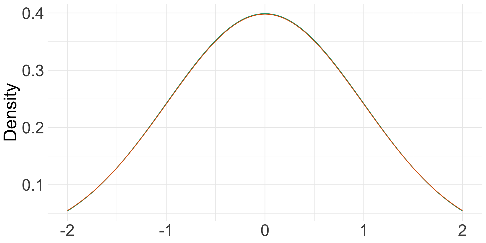
- The sample standard deviation of the data was 79.01.
- Assuming \(\sigma=\) 79.01, the 95% CI is
\[(836.914, 867.886)\]
- Assuming \(\sigma\) is unknown, the 95% CI is
\[(836.723, 868.077)\] +
Confidence intervals for a population mean
Given a data set \(x_1,...,x_n\) modelled as a realization of a random sample \(X_1,...,X_n\), we will study methods for constructing confidence intervals for the population mean.
Using Chebyshev’s inequality.Normal data with a known variance.Normal data with an unknown variance.- A large sample from an unknown distribution.
- A small sample from an unknown distribution.
What do we do when the data are not from a normal distribution?
When the sample is large…
Suppose \(\overline{X}_n\) is the sample mean of a random sample of size \(n\) from an unknown distribution with mean \(\mu\).
When \(n\) is considered sufficiently large, we can apply the central limit theorem.
Since the population variance is also unknown, we replace it with the sample variance, \(S_n^2\).
The sampling distribution of \(\displaystyle{\frac{\overline{X}_n-\mu}{S_n/\sqrt{n}}}\) is approximately
_______________________________________________________ .
A large sample from an unknown distribution
- This is an approximation.
- When \(n\) is large, using the approximation for data from a normal distribution with an unknown \(\sigma\) will result in a similar CI as the exact CI based on \(t(n-1)\) distribution.
Given a large data set of size \(n\) realized from an unknown distribution,
\[\left(\overline{x}_n-z_{\alpha/2}\frac{s_n}{\sqrt{n}}, \overline{x}_n+z_{\alpha/2}\frac{s_n}{\sqrt{n}}\right)\]
is an approximate \(100(1-\alpha)\)% confidence interval for the mean where \(s^2_n\) is the value of the sample variance..
Example: Bernoulli data
Suppose your randomly sample 100 viewers on your company’s video channel. What is the probability of any viewer “liking” the videos? What is the 95% confidence interval for the probability?
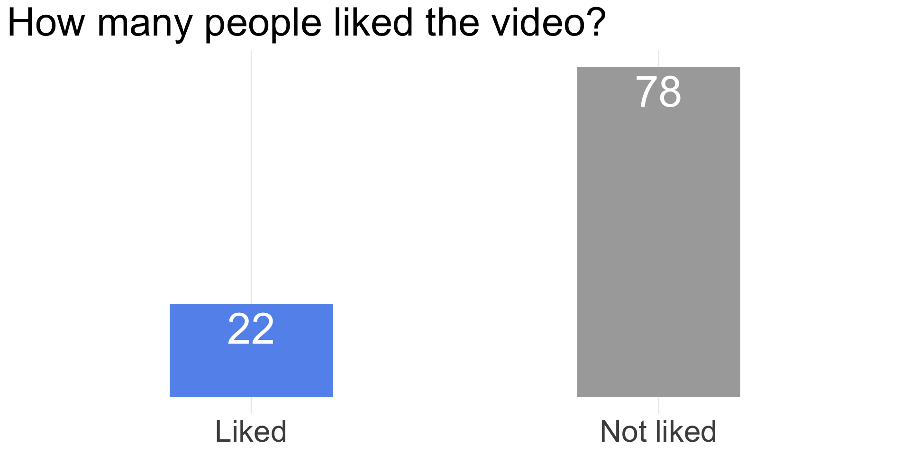
Example: Bernoulli data
Point estimate
\[\widehat{p}=\cfrac{22}{100}= 0.22\]
Apply CLT
\[(1-\widehat{p})\cdot 100 > \widehat{p}\cdot 100>10\]
\[\implies\widehat{p}\overset{\cdot}{\sim}N\left(p, \cfrac{p(1-p)}{n}\right)\]
95% confidence interval
\[P\left(z_{1-\alpha/2}<\cfrac{\widehat{p}-p}{\sqrt{p(1-p) / n}}<z_{\alpha/2}\right)\approx 1-\alpha\]
Example: Bernoulli data
Point estimate
\[\widehat{p}=\cfrac{22}{100}= 0.22\]
Apply CLT
\[(1-\widehat{p})\cdot 100 > \widehat{p}\cdot 100>10\]
\[\implies\widehat{p}\overset{\cdot}{\sim}N\left(p, \cfrac{p(1-p)}{n}\right)\]
95% confidence interval
\[P\left(\color{orange}{-z_{\alpha/2}}<\cfrac{\widehat{p}-p}{\sqrt{p(1-p) / n}}<z_{\alpha/2}\right)\approx 1-\alpha\]
\[\left(\cfrac{\widehat{p}-p}{\sqrt{p(1-p) / n}}\right)^2<z_{\alpha/2}^2\]
Example: Bernoulli data
Point estimate
\[\widehat{p}=\cfrac{22}{100}= 0.22\]
Apply CLT
\[(1-\widehat{p})\cdot 100 > \widehat{p}\cdot 100>10\]
\[\implies\widehat{p}\overset{\cdot}{\sim}N\left(p, \cfrac{p(1-p)}{n}\right)\]
95% confidence interval
\[P\left({-z_{\alpha/2}}<\cfrac{\widehat{p}-p}{\sqrt{p(1-p) / n}}<z_{\alpha/2}\right)\approx 1-\alpha\]
\[\left(\cfrac{\widehat{p}-p}{\sqrt{p(1-p) / n}}\right)^2<z_{\alpha/2}^2\]
\[\cdots\text{expand and solve the qudratic equation}\cdots\]
\[\left(\frac{z_{\alpha/2}^2}{n}+1\right)p^2-\left(\frac{z_{\alpha/2}^2}{n}+2\widehat{p}\right)+\widehat{p}^2<0\]
\[\left(\frac{1.96^2}{100}+1\right)p^2-\left(\frac{1.96^2}{100}+2\cdot0.22\right)p+0.22^2<0\]
\[1.038p^2-0.478p+0.048<0\]
Example: Bernoulli data
Point estimate
\[\widehat{p}=\cfrac{22}{100}= 0.22\]
Apply CLT
\[(1-\widehat{p})\cdot 100 > \widehat{p}\cdot 100>10\]
\[\implies\widehat{p}\overset{\cdot}{\sim}N\left(p, \cfrac{p(1-p)}{n}\right)\]
95% confidence interval
\[P\left({-z_{\alpha/2}}<\cfrac{\widehat{p}-p}{\sqrt{p(1-p) / n}}<z_{\alpha/2}\right)\approx 1-\alpha\]
\[1.038p^2-0.478p+0.048<0\]
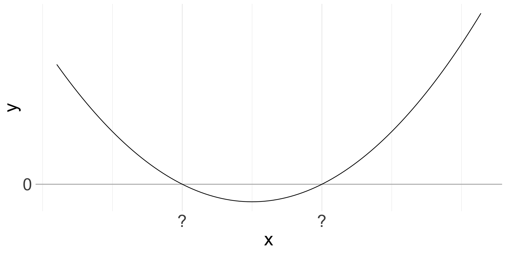
Example: Bernoulli data
Point estimate
\[\widehat{p}=\cfrac{22}{100}= 0.22\]
Apply CLT
\[(1-\widehat{p})\cdot 100 > \widehat{p}\cdot 100>10\]
\[\implies\widehat{p}\overset{\cdot}{\sim}N\left(p, \cfrac{p(1-p)}{n}\right)\]
95% confidence interval
\[P\left({-z_{\alpha/2}}<\cfrac{\widehat{p}-p}{\sqrt{p(1-p) / n}}<z_{\alpha/2}\right)\approx 1-\alpha\]
\[1.038p^2-0.478p+0.048<0\]
\[0.148 < p < 0.313\]
is the 95% confidence interval for \(p\).
Example: Bernoulli data
Alternatively, approximate the variance of \(\widehat{p}\) using the observed data.
\[\widehat{p}\overset{\cdot}{\sim}N\left(p, \cfrac{p(1-p)}{n}\right)\]
\[P\left(\widehat{p}-z_{0.025}\sqrt{\frac{\widehat{p}(1-\widehat{p})}{n}}<p<\widehat{p}+z_{0.025}\sqrt{\frac{\widehat{p}(1-\widehat{p})}{n}}\right)\approx 0.95\]
Example: Bernoulli data
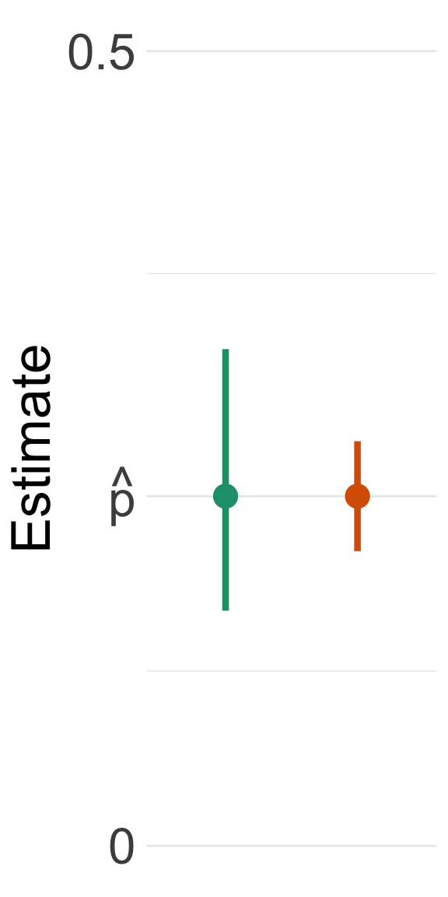
- The first method incorporates the uncertainty associated with the variance.
- The second method approximates a fixed variance.
Confidence intervals for a population mean
Given a data set \(x_1,...,x_n\) modelled as a realization of a random sample \(X_1,...,X_n\), we will study methods for constructing confidence intervals for the population mean.
Using Chebyshev’s inequality.Normal data with a known variance.Normal data with an unknown variance.A large sample from an unknown distribution.- A small sample from an unknown distribution.
What do we do when we don’t have a large sample?
Pull yourself up by
THE BOOTSTRAPS.
- Suppose \(\overline{X}_n\) is the sample mean of a random sample of size \(n\) from an unknown distribution with mean \(\mu\).
- When \(n\) is NOT considered sufficiently large, we can not apply the central limit theorem.
- Instead, we can apply the bootstrap principle to estimate the distribution the empirical bootstrapping method.
A small sample from an unknown distribution
- See R Module 5
- Note that the estimated sampling distribution is no longer guaranteed to be symmetric.
Given a small data set of size \(n\) realized from an unknown distribution,
\[\left(\overline{x}_n-c^*_u\frac{s_n}{\sqrt{n}}, \overline{x}_n-c^*_l\frac{s_n}{\sqrt{n}}\right)\]
is an approximate \(100(1-\alpha)\)% confidence interval for the mean where \(s^2_n\) is the value of the sample variance and \(c^*_u\) and \(c^*_l\) are approximate critical value obtained from bootstrap samples.
How to interpret confidence intervals
- The bounds of a confidence interval is a pair of random variables.
- The parameter is NOT random.
- As an example, suppose \(\alpha = 0.05\).
- 95% of all possible samples of size \(n\) will yield a confidence interval that includes the true value of \(\theta\).
- 5% of all possible samples of size \(n\) will yield a confidence interval that does NOT include the true value of \(\theta\).
We are 95% confident that the true value of \(\theta\) is between \(\ell_n\) and \(u_n\).
Confidence intervals for a population mean
Given a data set \(x_1,...,x_n\) modelled as a realization of a random sample \(X_1,...,X_n\), we will study methods for constructing confidence intervals for the population mean.
Using Chebyshev’s inequality.Normal data with a known variance.Normal data with an unknown variance.A large sample from an unknown distribution.A small sample from an unknown distribution.
Confidence interval for \(\sigma^2\)
Example: The speed of light
Constructing 95% confidence interval for \(\mu\)
\[\left(\overline{x}_n-t_{n-1,\alpha/2}\frac{s_n}{\sqrt{n}}, \overline{x}_n+t_{n-1,\alpha/2}\frac{s_n}{\sqrt{n}}\right)\]
since we have assumed a normal data with an unknown variance.
Recall, the confidence interval is constructed based on the sampling distribution of
\[\frac{\overline{X}_n - \mu}{S_n\left/\sqrt{n}\right.}\]
where \(S_n\) is the sample standard deviation.
The quantity is an example of a pivot.
Pivot
Pivots can help us construct confidence intervals for a parameter.
Suppose you have a random sample \(X_1,...,X_n\) and a parameter of interest \(\theta\). A pivot is a random variable that satisfies the following:
- The random variable depends only on the random sample \(X_1,...,X_n\) and the parameter of interest \(\theta\), but not on any other parameter; and
- The random variable has a probability distribution that does not depend on \(\theta\) or any other unknown parameter.
Example: The speed of light
Constructing 95% confidence interval for \(\sigma\)
- We don’t have the distribution of \(S_n\).
- But we know that \[\frac{(n-1)S^2_n}{\sigma^2}\sim\text{_____________}\ .\]
- \(\displaystyle\frac{(n-1)S^2_n}{\sigma^2}\) is another example of a pivot.
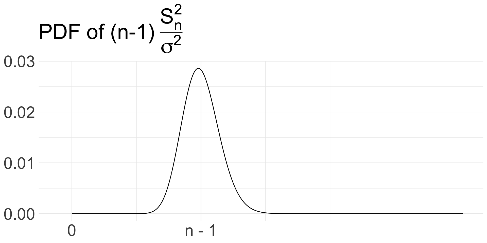
Example: The speed of light
Constructing 95% confidence interval for \(\sigma^2\)
We can then use …
\[P\left(c_l < \frac{(n-1)S_n^2}{\sigma^2} < c_u\right)=1-\alpha=0.95\] and find the appropriate critical values \(c_l\) and \(c_u\).
Example: The speed of light
Constructing 95% confidence interval for \(\sigma^2\)
Confidence interval for the variance of a normal distribution
- We need to compute the critical values on both sides since the sampling distribution is not symmetric around 0.
Given a small data set of size \(n\) realized from a normal distribution with unknown mean and variance,
\[\left((n-1)\frac{s^2_n}{\chi^2_{n-1,\alpha/2}}, (n-1)\frac{s^2_n}{\chi^2_{n-1,1-\alpha/2}}\right)\]
is an approximate \(100(1-\alpha)\)% confidence interval for the variance where \(s^2_n\) is the value of the sample variance and \(\chi^2_{m,p}\) is the critical value of \(\chi^2(m)\) distribution at \(p\).
Summary
Confidence intervals provide a range of possible values for an unknown parameter with a fixed probability – the confidence level.
For a population mean, we can construct a confidence interval by
- using Chebyshevy’s inequality for a conservative confidence interval;
- using the normal critical values when we know the data came from a normal distribution with a known variance;
- using studentized mean and its t-distribution when we know the data came from a normal distribution with an unknown variance;
- using the central limit theorem when we don’t know the underlying distribution of the data but the data is large; and
- using the bootstrapping method when we don’t know the underlying distribution of the data and the data isn’t large.
Using pivots, we can also obtain confidence intervals for other parameters such as the variance.
© 2026. Michael J. Moon. University of Toronto.
Sharing, posting, selling, or using this material outside of your personal use in this course is NOT permitted under any circumstances.